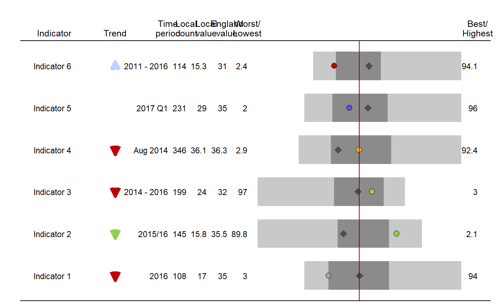
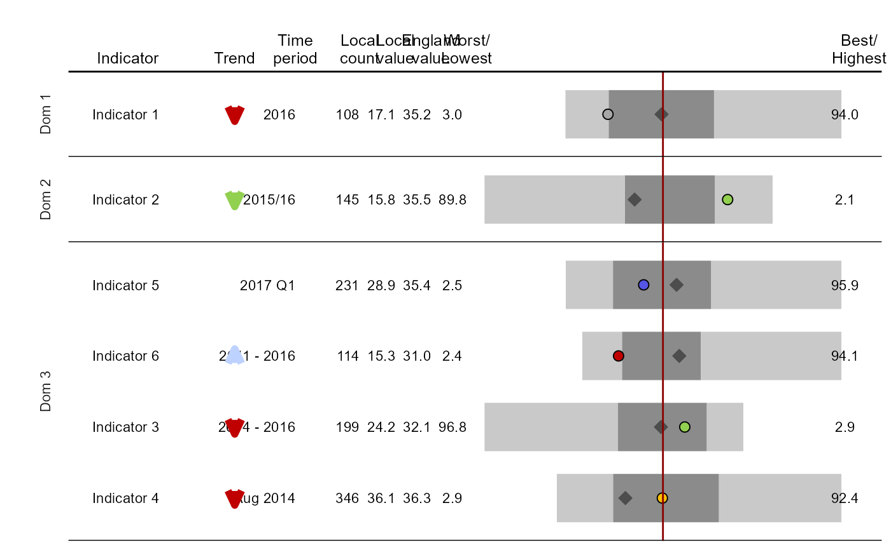

Returns ggplot of spine chart
area_profiles( data, value, count, area_code, local_area_code, indicator, timeperiod, trend = NA, polarity, significance, area_type, cols = "fingertips", median_line_area_code = "E92000001", comparator_area_code = NA, bar_width = 0.75, local_point_shape = 21, local_point_outline = "black", comparator_point_shape = 23, comparator_point_outline = "gray30", comparator_point_fill = "gray30", relative_point_size = 1, relative_text_size = 1, header_positions = c(-1.83, -1.13, -0.53, -0.35, -0.25, -0.15, -0.05, 1.05), header_labels = c("Indicator", "Trend", "Time\nperiod", "Local\ncount", "Local\nvalue", "England\nvalue", "Worst/\nLowest", "Best/\nHighest"), indicator_label_nudgex = -0.075, domain = no_domains, relative_domain_text_size = 1, show_dividers = "none", datatable = TRUE, datatable_line_height = 0.6, dps = 1, percent_display = 0.25, arrow_length = 1, arrow_thickness = 2, arrow_head_length = arrow_length/3, arrow_head_angle = 25, horizontal_arrow_multiplier = 1 )
| data | a data frame to create the spine chart from. the data frame should contain data for all area types included in the chart (eg, if plotting for County & UA with a comparator of region and a median line for national, the data frame should contain all of these data) |
|---|---|
| value | unquoted field name containing the values to be plotted |
| count | unquoted field name where the count (numerator) is stored |
| area_code | unquoted field name where area codes are stored (local_area_code, median_line_area_code and comparator_area_code, if using, should all exist in this field) |
| local_area_code | string; the code of the area that the spine chart is being drawn for |
| indicator | unquoted field name of the field containing the indicator labels. Take care as errors will occur where indicator labels are the same but data exist for multiple sub-categories (for example, sex or age) |
| timeperiod | unquoted field name of the time period field |
| trend | unquoted field name of the trend field; if the user doesn't want to display trend information then leave this incomplete and amend the header_labels argument to replace the "Trend" header with "". Text within this field should contain one of the following words to control the arrows that are displayed; "decreasing", "increasing", "no significant change", "could not be calculated". The text within this field should contain one of the following words to control the colour; "better", "worse", "no significant change". If none of these words appear in the string, the words "increasing" or "decreasing" will be used to colour the arrows in different shades of blue |
| polarity | unquoted field name containing the polarity information (currently only handles polarity returned by fingertipsR package) |
| significance | unquoted field name describing the statistical significance for that indicator (eg, Better, Worse, Similar etc) |
| area_type | unquoted field name containing area type information. This ensures the vertabra are only plotted for the same area types as the local_area area type (eg, when plotting a spine chart for County & UA areas, regions and national area types will be removed) |
| cols | named character vector for the cols that will be applied to the significance field. The names should contain all of the levels in the significance field of the data frame. Defaults to the Fingertips colours based on the outputs from the API |
| median_line_area_code | string; area code for the median line. Defaults to "E92000001" (England) |
| comparator_area_code | string; area code for the comparator point. Defaults to NA |
| bar_width | numeric value; the distance between bars (0 to 1) |
| local_point_shape | numeric value; shape type for local area point (defaults to 21, circle). See ggplot2 shape types for different values |
| local_point_outline | string; control colour of the outline of the local point in the spine chart |
| comparator_point_shape | numeric value; shape type for regional area point (defaults to 23, diamond). See ggplot2 shape types for different values |
| comparator_point_outline | string; control colour of the outline of the regional point in the spine chart |
| comparator_point_fill | string; control the fill colour of the regional point in the spine chart |
| relative_point_size | numeric value; control the size of the points on the spine chart |
| relative_text_size | numeric value; control the size of the text in the accompanying table |
| header_positions | numeric vector; used to adjust columns of data table if they are overlapping. The final value shouldn't be less than 1. Must have a length of 7. Defaults to c(-1.43, -.53, -.35, -.25, -.15, -0.05, 1.05) |
| header_labels | character vector; labels used for the titles of the columns for a data table. Must have a length of 7. Defaults to c("Indicator", "Time period", "Local count","Local value", "England value", "Worst/Lowest","Best/Highest") |
| indicator_label_nudgex | number; nudge the placement of the indicator label in the x direction. Negative values nudge to the left |
| domain | unquoted field name describing the grouping of the domains if wishing to split the spine chart into domains |
| relative_domain_text_size | numeric; control the text size for the domain labels (if include.domains = TRUE) relative to 1 |
| show_dividers | string; whether to display horizontal lines between indicators. Values can be "all" or "outer". Any other value will not generate lines |
| datatable | logical; default = TRUE, display data table alongside spine chart |
| datatable_line_height | number; height of wrapped lines in the data table |
| dps | number; number of decimal places to be displayed in the data table. The default is 1. Set to NA if this should be the same as the input data |
| percent_display | number between 0 and 1; the percentage of values that needs to exist for a spine to display. Default is 0.25 |
| arrow_length | number to control the length of the trend arrow |
| arrow_thickness | number to control the thickness of the trend arrow |
| arrow_head_length | number to control the length of the arrow head |
| arrow_head_angle | number to control the angle of the arrow head |
| horizontal_arrow_multiplier | number to scale horizontal trend arrows. A value below 1 will shorten the arrows |
a ggplot object containing a spine chart
the function draws a bar chart (which is the spine) and then plots the data table (if datatable = TRUE) using geom_text. The bar chart is always plotted between 0 and 1 on the x scale. The columns in the data table are controlled by the header_positions argument. To adjust the length of the bars in the visualisation, amend the header_positions argument. The more negative the first value of the vector that goes into header_positions, the more condensed the bar part of the visualisation will be.
This function filters for the area type that is the same as your local area type and then calculates the "vertebra" from those data. Therefore, if you are comparing outputs with those seen on the Fingertips website, ensure you perform the same preprocessing. For example, some profiles display spine charts where small areas, such as Isles of Scilly, are removed before the spine is produced.
#> #>#> #> #>#> #> #>df <- create_test_data() %>% mutate(Value = case_when( grepl("2$|4$|6$", IndicatorName) ~ round(Value,1), TRUE ~ round(Value, 0))) full_p <- area_profiles(df, value = Value, count = Count, area_code = AreaCode, local_area_code = "AC122", indicator = IndicatorName, timeperiod = Timeperiod, trend = Trend, polarity = Polarity, significance = Significance, area_type = AreaType, median_line_area_code = "C001", comparator_area_code = "PAC12", datatable = TRUE, relative_domain_text_size = 0.75, relative_text_size = 1.2, bar_width = 0.68, indicator_label_nudgex = -0.1, show_dividers = "outer", header_positions = c(-1, -0.7, -0.44, -0.35, -0.25, -0.15, -0.05, 1.08), dps = NA) full_p#> Warning: Removed 1 rows containing missing values (geom_spoke).#> Warning: Removed 1 rows containing missing values (geom_spoke).## An example with domains and non-default indicator ordering df <- create_test_data() label_order <- c(1, 2, 4, 3, 6, 5) df <- df %>% mutate(IndicatorName = factor(IndicatorName, levels = paste("Indicator", label_order))) p <- area_profiles(df, value = Value, count = Count, area_code = AreaCode, local_area_code = "AC122", indicator = IndicatorName, timeperiod = Timeperiod, trend = Trend, polarity = Polarity, significance = Significance, area_type = AreaType, median_line_area_code = "C001", comparator_area_code = "PAC12", datatable = TRUE, relative_domain_text_size = 0.75, relative_text_size = 1.2, bar_width = 0.68, indicator_label_nudgex = -0.1, show_dividers = "outer", header_positions = c(-1, -0.7, -0.53, -0.35, -0.25, -0.15, -0.05, 1.05), domain = Domain ) p#> Warning: Removed 1 rows containing missing values (geom_spoke).#> Warning: Removed 1 rows containing missing values (geom_spoke).